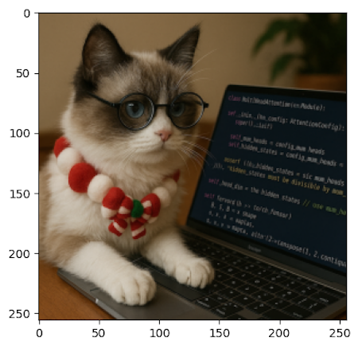
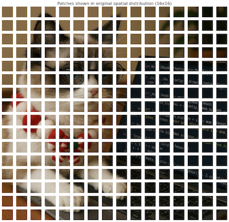
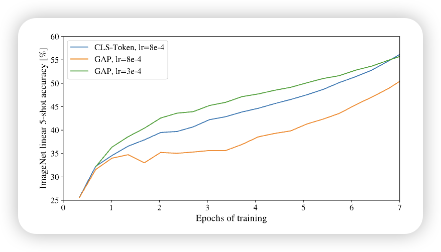
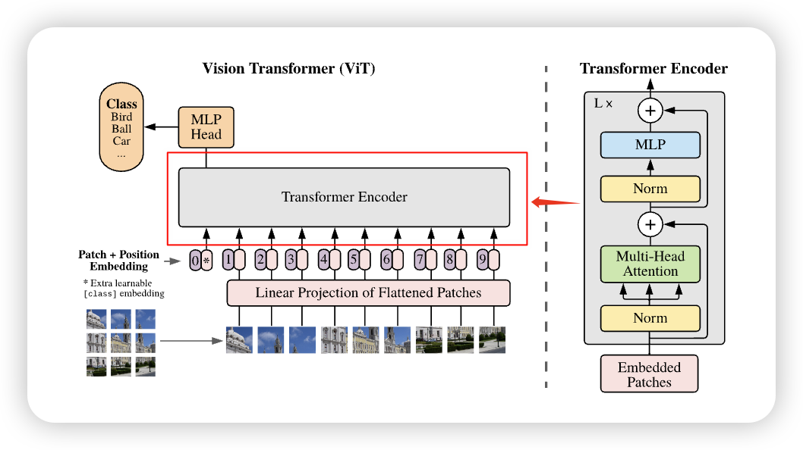
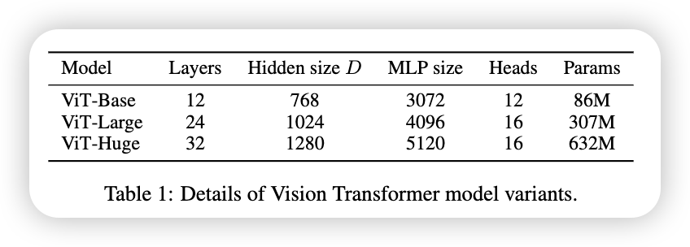

Vision-Transformer
1 Preliminary
2 Vision-Transformer
3 Summary
4 Key Concepts
5 Q & A
7 Preliminary
在了解了什么是Transformer之后，我们来看看如何将Transformer应用于Computer Vision。Vision Transformer（ViT）(Dosovitskiy et al. 2021) 是一个将Transformer架构应用于图像分类的模型。它的核心思想是将图像划分为小块（patches），然后将这些小块视为序列数据，类似于处理文本数据。
8 Vision-Transformer

Vision Transformer 的工作流程（如上图所示）： 1. 图像切分（Patchify）： 将输入图像划分为若干大小相同的小块（Patch），并展开为一维序列。 2. 线性映射： 使用线性层将每个 Patch 映射为固定维度的隐藏向量（Hidden Embedding）。 3. 加入 [CLS] 标记： 在序列开头添加一个特殊的 [CLS] token，用于表示整张图像的全局语义。 4. 位置编码： 为每个向量添加可学习的位置嵌入（Position Embedding），保留空间位置信息。 5. Transformer 编码器： 将上述序列输入 Transformer Encoder，以捕捉全局依赖关系。 6. 分类头（MLP Head）： 最终通过一个多层感知机（MLP）分类头输出图像所属的类别。
对于 Transformer ，Vision Transformer (ViT) 的主要区别在于： 1. 增加了一个 Patchify 步骤，将图像划分为若干小块并转化为序列输入； 2. 将原本的 正余弦位置编码（sinusoidal position embedding） 替换为 可学习的位置嵌入（learned position embedding）； 3. 在最后额外添加了一个 分类头（classification head），用于完成图像分类任务。
我们之前已经学习过了什么是 Transformer . 建议忘记了的同学再去回顾一下，我们就不多重复了。 我们首先来看如何进行Patch Embedding
8.1 Patch Embedding
The standard Transformer receives as input a 1D sequence of token embeddings. To handle 2D images, we reshape the image \(x \in \mathbb{R}^{H \times W \times C}\) into a sequence of flattened 2D patches\(x \in \mathbb{R}^{N \times (P^{2} \times C)}\), where (\(H, W\)) is the resolution of the original image, \(C\) is the number of channels, (\(P, P\)) is the resolution of each image patch, and \(N = HW/P^{2}\) is the resulting number of patches, which also serves as the effective input sequence length for the Transformer. The Transformer uses constant latent vector size \(D\) through all of its layers, so we flatten the patches and map to \(D\) dimensions with a trainable linear projection. We refer to the output of this projection as the patch embeddings. An Image is Worth 16x16 Words- Transformers for Image Recognition at Scale, p.3
在Transformer 这一篇，我们了解到，它是作用于Sequence Modeling的，很显然，Image 不是 Sequence的。很直观的第一种想法就是，将图片直接展开，从二维 (\(3, H, W\)) 展开成一维的 (\(3, H \times W\)). 这样我们就得到的图片的Sequence Model。如下图@fig-flat-image所示
这种方法有一种明显的问题就是：Sequence的长度太长，举个例子，对于 \(3\times 256 \times 256\) 的图片，我们有 \(256 \times 256 = 65,336\) 个tokens，通过这种方法，所需要的训练时长很长。并且它没有用到图片的一个特性：相邻的pixel 之间，是有很高的correlation的。所以我们很自然的想到：如果把相邻的pixels和在一组，组成一个patch，这样不就既减少了tokens的数量，又用到了pixel之间的correlation。这就是Vision Transformer 的Patch Embedding。 这样我们就得到了。 接下来我们只需要用，一个MLP，将我们展开的patch，映射到 \(D\)- dimension的空间，这样我们就可以传入Transformer 模型了。
接下来我们来看看代码怎么实现：
# Load Image and resize it to certain size
image_path = IMAGE_PATN
img_bgr = cv2.imread(image_path)
img_resized = cv2.resize(img_bgr, (IMAGE_SIZE, IMAGE_SIZE), interpolation=cv2.INTER_AREA)
img = cv2.cvtColor(img_resized, cv2.COLOR_BGR2RGB)
# Patchify
patches = einops.rearrange(
img, "(h ph) (w pw) c -> (h w) ph pw c", ph=PATCH_SIZE, pw=PATCH_SIZE
)通过这个Patchify只有，我们得到将图片Patch到了


分成了不同的小Patch。
接下来我们要做的就是，将这些Patch 展开，然后传入一个MLP，
flat_patch = einops.rearrange(
patches, "n ph pw c -> n (ph pw c)"
)
mlp = nn.Linear(PATCH_SIZE * PATCH_SIZE * 3, d_model)
patch_embedding = mlp(flat_patch)同这种方式，我们就可以见图片转化为Transformer可以接受的vector。不过在实际操作中，我们并不会用以上的方式，因为上面的方式实现起来比较慢，我们可以将Patch 和 Linear Project和在一起。
将几个tensor 的operation操作合成一个的方法，叫做kernel fusion，这是一种提高训练和推理素的方法
在实际的代码中，我们用Convolution Layer 代替 Patch + Flatten+ Linear 的方法. 如果我们用一个 卷积层，参数设置为： • kernel_size = PATCH_SIZE （卷积核覆盖一个 patch） • stride = PATCH_SIZE （不重叠地移动，相当于切 patch） • in_channels = 3（RGB） • out_channels = d_model
那么卷积会： 1. 把输入图片分成 PATCH_SIZE x PATCH_SIZE 的不重叠块（因为 stride = kernel_size）。 2. 对每个 patch 做一次线性映射（因为卷积本质上就是对局部区域做加权求和，相当于 Linear）。 3. 输出的 shape 自动就是 (batch, num_patches, d_model)。
这正好等价于 切 patch + flatten + Linear 的组合。
代码如下：
class PatchEmbedding(nn.Module):
def __init__(self, config: ModelConfig):
super().__init__()
self.conv = nn.Conv2d(
in_channels=config.num_channels,
out_channels=config.hidden_dim,
kernel_size=config.patch_size,
stride=config.patch_size,
padding="valid" if config.patch_size == 16 else "same",
)
def forward(self, imgs: torch.Tensor) -> torch.Tensor:
"""
imgs: (batch_size, num_channels, height, width)
Returns: (batch_size, num_patches_height, num_patches_width, hidden_dim)
"""
# (B, C, H, W) -> (B, hidden_dim, H', W')
x = self.conv(imgs)
# (B, hidden_dim, H', W') -> (B, hidden_dim, H' * W')
x = x.flatten(2)
# (B, hidden_dim, H' * W') -> (B, H' * W', hidden_dim)
x = x.transpose(1, 2)
return x用卷积的好处，除了可以更高效的实现Patch Embedding，代码更加简洁之外，我们还可以通过改变 stride 来使一些Patch overlapping，获得一个多尺度的结构，
8.2 Position Encoding
将图片转化为 Transformer 的输入之后，接下来Transformer中的另一个组件就是传入 Position Information。我们知道在Transformer 中，他们用的是 sine-cosine position embedding，在那篇文章中，我们也提到了，还存在其他不同的Position Encoding的办法，ViT 用的就是另一种办法，Learned Position Embedding。Learned Position Embedding的方法很简单，也很好理解，对于每一个位置，我们给他一个index，将这个index传入一个 Embedding Matrix， 我们就得到一个Position Embedding。不过与Token Embedding不同的是，我们会用到所有的Position，也整个matrix， 所以我们不用定index，直接定义整个Embedding，然后将它传入Transformer中。
class PositionalEncoding(nn.Module):
def __init__(self, config: ModelConfig):
super().__init__()
self.positional_embedding = nn.Parameter(
torch.randn(
1,
(config.image_size // config.patch_size) ** 2 + 1,
config.hidden_dim,
)
)
self.cls_token = nn.Parameter(torch.randn(1, 1, config.hidden_dim))
def forward(self, x: torch.Tensor):
"""
x: (batch_size, num_patches, hidden_dim)
Returns: (batch_size, num_patches, hidden_dim)
"""
# Add positional encoding to the input tensor
batch_size = x.size(0)
pos_embedding = self.positional_embedding.expand(batch_size, -1, -1)
cls_token = self.cls_token.expand(batch_size, -1, -1)
x = torch.cat((cls_token, x), dim=1)
return x + pos_embedding为什么ViT要用Learned Position Embedding呢？在ViT这篇文章中，他们尝试过不同的Position Embedding，比如：
- No Positional Information
- 1-dimensional Positional Embedding
- 2-dimensional Positional Embedding
- Relative Positional Embedding
发现，除了No Positional Information之外，其余3种在Image Classification中的表现，都是差不多的。
论文中表示，可能是因为所需要的 Position的信息较小，对于不同种类的Position Embedding的方法，学习这个Position Information的能力，都是差不多的。
We speculate that since our Transformer encoder operates on patch-level inputs, as opposed to pixel-level, the differences in how to encode spatial information is less important. More precisely, in patch-level inputs, the spatial dimensions are much smaller than the original pixel-level inputs, e.g., \(14 \times 14\) as opposed to \(224 \times 224\), and learning to represent the spatial relations in this resolution is equally easy for these different positional encoding strategies. An Image is Worth 16x16 Words- Transformers for Image Recognition at Scale, p.18
不过，尽管Position的方法不重要，但是不同的训练参数，还是会影响到学习到的Position Information, 下图所示：
8.2.1 Extending Position Encoding
当我们有了一个Pre-Training的模型，我们想用它Fine-Tuning到一个不同图片大小的数据库，我们改怎么做呢，第一个方法当然是，Resize 我们的图片，到ViT Pre-training的图片大小，但是，这个能导致较大的图片，失去很多细节。如果我们想保持图片的大小不变，同时让模型训练，我们就需要Extend Position Encoding，因为当Patch Size不变，图片大小变了的话，产生的Number of Patches 也是会改变的，这样，就是损失一些信息。我们需要做的是，找到一种方法，增大或者减小Position的数量。 这就是所谓的Position Interpolation。
2D interpolation of the pre-trained position embeddings • ViT 在预训练时，通常用固定输入分辨率（比如 224×224） → 生成固定数量的 patch（比如 16×16 patch → 196 个 patch）。 • 但在 fine-tuning 时，输入图片可能大小不一样，比如 384×384，这时 patch 数量就变了。 • 这会导致原本的 位置编码 (position embeddings) 和新的 patch 数量对不上。 • 解决办法：对预训练好的位置编码做 二维插值 (2D interpolation)，根据 patch 在原图中的空间位置，把位置编码拉伸/缩放到新的分辨率。
The Vision Transformer can handle arbitrary sequence lengths (up to memory constraints), however, the pre-trained position embeddings may no longer be meaningful. We therefore perform 2D interpolation of the pre-trained position embeddings, according to their location in the original image An Image is Worth 16x16 Words- Transformers for Image Recognition at Scale, p.4
def interpolate_pos_encoding(self, x, w, h):
npatch = x.shape[1] - 1
N = self.pos_embed.shape[1] - 1
if npatch == N and w == h:
return self.pos_embed
class_pos_embed = self.pos_embed[:, 0]
patch_pos_embed = self.pos_embed[:, 1:]
dim = x.shape[-1]
w0 = w // self.patch_embed.patch_size
h0 = h // self.patch_embed.patch_size
patch_pos_embed = F.interpolate(
patch_pos_embed.reshape(
1,
int(math.sqrt(N)),
int(math.sqrt(N)),
dim
).permute(0, 3, 1, 2),
scale_factor=(w0 / math.sqrt(N), h0 / math.sqrt(N)),
mode='bicubic',
)
patch_pos_embed = patch_pos_embed.permute(0, 2, 3, 1).view(1, -1, dim)
return torch.cat((class_pos_embed.unsqueeze(0), patch_pos_embed), dim=1)8.3 [CLS] Tokens & MLP Head
在 Transformer 这一节，我们了解到：每输入一个token，Transformer会输出对应的token。这就是说，对于每个patch，Transformer会输出对应的Tokens，那么，我们应该选择哪一个token作为我们图片的表示呢。 BERT (Devlin et al. 2019)， 用了一个 [CLS], 来表示一个句子。同理，我们也可以添加一个 [CLS] token, 来表示一张图片。同时，对于 [CLS] token, 我们也要在给他一个表示位置的信息。这就是为什么在Position Encoding上，我们有 (config.image_size // config.patch_size) ** 2 + 1, 位置信息，其中 +1 就是 [CLS] 的位置信息。 总结一下 [CLS] token 的作用就是用来聚合所有的Patch的消息，然后用来Image 的Representation。
我们想一下，除了加一个 [CLS] token，之外，我们还有其他办法来表示图片吗。有一种很自然的方法就是，将所有的patch的消息收集起来，然后去一个平均值来表示这个图片。类似于传统的ConvNet(e.g. ResNet) 我们可以通过 AvgPooling 来实现。 不过论文中提到， 对于两种不同的Image Representation，需要有不同的Learning Rate 来训练这个网络。
Other content 
有了Image Represent之后，我们只需要将这个传入一个简单的MLP，我们就可以得到一个Classifier。MLP的输入是hidden dim，输入则是我们Number of Classes。不同的Index 表示不同的Classses。
An initial attempt at using only image-patch embeddings, globally average-pooling (GAP) them, followed by a linear classifier—just like ResNet’s final feature map—performed very poorly. However, we found that this is neither due to the extra token, nor to the GAP operation. Instead, the difference in performance is fully explained by the requirement for a different learning-rate, An Image is Worth 16x16 Words- Transformers for Image Recognition at Scale, p.17
Both during pre-training and fine-tuning, a classification head is attached to \(\mathrm{z}_{L}^{0}\). The classification head is implemented by a MLP with one hidden layer at pre-training time and by a single linear layer at fine-tuning time. An Image is Worth 16x16 Words- Transformers for Image Recognition at Scale, p.3
class ClassifierHead(nn.Module):
def __init__(self, config: ModelConfig):
super().__init__()
self.fc1 = nn.Linear(config.hidden_dim, config.mlp_dim)
self.fc2 = nn.Linear(config.mlp_dim, config.num_classes)
self.dropout = nn.Dropout(config.dropout_rate)
def forward(self, x: torch.Tensor):
"""
x: (batch_size, num_patches, hidden_dim)
Returns: (batch_size, num_classes)
"""
# Use the CLS token for classification
cls_token = x[:, 0, :]
x = F.relu(self.fc1(cls_token))
x = self.dropout(x)
x = self.fc2(x)
return x8.4 Transformer Encoder Block
至此，我们已经讲完了ViT与Transformer的主要不同之处。接下来，就是Transformer的Encoder。 
这部分，和Transformer原本的Encoder很类似，只不过有几处不同：
- Pre-Norm: 在ViT同，输入先进行一个LayerNorm，然后在传入MHA或者MLP中，反观在Transformer原本的Encoder中，我们是先将MHA或者MLP的输出与输入加在一起，之后再进行一个Normalization。这叫做Post-Norm
- MLP的实现：在Transformer Encoder中，用的是
ReLU, 而在ViT中，用的是GELU
除此之外，其他部分都是一样的。一下是ViT Encoder的实现：
class EncoderBlock(nn.Module):
def __init__(self, config: ModelConfig):
super().__init__()
self.norm1 = LayerNorm(config.hidden_dim)
self.mha = MHA(config)
self.norm2 = LayerNorm(config.hidden_dim)
self.ffn = FFN(config)
def forward(self, x: torch.Tensor):
"""
x: (batch_size, num_patches, hidden_dim)
Returns: (batch_size, num_patches, hidden_dim)
"""
# Multi-head attention
redisual = x
x = self.norm1(x)
x = redisual + self.mha(x)
# Feed-forward network
redisual = x
x = self.norm2(x)
x = x + self.ffn(x)
return x8.5 CNN vs. ViT： Inductive bias
至此，我们已经介绍完了Vision Transformer，我们来从Inductive Bias 的方面，看看 CNN 和 ViT 有什么不同
在深度学习里，Inductive Bias（归纳偏置）是指模型在学习之前，因结构或设计而自带的假设或先验。
对于图像来说，常见的先验就是：
- 局部像素是相关的（locality）
- 相邻区域的模式有规律（2D neighborhood）
- 物体无论出现在图像哪里，识别方式应该一样（translation equivariance）
🔹 2. CNN 的结构怎么体现这些偏置？ 1. 局部性 (Locality) • 卷积核（例如 3×3）只和局部像素打交道，而不是全图。 • 这意味着模型“相信”图像的重要特征来自局部邻域，而不是遥远区域。 2. 二维邻域结构 (2D structure) • 卷积操作是沿着 图像的二维网格进行的，天然利用了图像的行列结构。 • 这和文本（序列 1D）不一样，CNN 明确知道输入是 2D 排列的。 3. 平移等变性 (Translation equivariance) • 卷积核的参数在整张图共享。 • 所以猫在左上角还是右下角，卷积核都能检测到“猫耳朵”。 • 这让 CNN 自动具有“识别位置无关”的能力。
这些性质不是模型通过训练学出来的，而是因为 卷积操作本身的数学结构就带来的： • kernel 的局部连接 → 局部性 • kernel 滑动覆盖全图 → 平移等变性 • 操作在二维空间定义 → 邻域结构 • 所以，哪怕你不给 CNN 喂太多数据，它也会利用这些偏置去学习特征。
而对于 ViT 来说： ViT 的归纳偏置非常弱，几乎完全依赖数据和训练来学习。
- Patch 切分 (Patchification) • ViT 唯一的“图像先验”之一就是把输入图片切成 patch。 • 这一操作隐含了：图像是一个二维结构，可以被分块处理。
- 位置编码 (Positional Embeddings) • Transformer 本身只处理序列，没有空间结构的概念。 • ViT 通过加位置编码告诉模型 patch 在图像中的相对位置。 • 在输入分辨率变化时，会做 二维插值 (2D interpolation) 来适配，这也是一种人工引入的 2D 先验。
- 其他部分 • 除了以上两点，ViT 的注意力机制是 全局的 (global)，没有局部性约束。 • 没有像 CNN 那样内置的平移等变性或局部邻域结构。
这样就是为什么ViT需要更多数据和计算才能学到同样的空间归纳规律。
8.6 ViT Model Variants
ViT 有3种不同的基本变形， 如下图所示 
ViT的名字通常表示为: ViT-L/16: 意思是，ViT-Large，然后用的16 Patch Size。 需要注意的是，Patch Size越大，我们得到的tokens就越少，也就是需要更少的训练时实现。
9 Q&A
10 扩展
10.1 减少Tokens
- Patch Merge
- Patch Shuffle
10.2 Vision Language Model
我们以及学习了ViT for computer Vision， Transformer for NLP， 接下来有什么办法让这两种模型结合起来呢？ CLIP (2021): 将 ViT 融合到 vision-language 预训练中。
11 Appendix
11.1 Axial Attention（轴向注意力）
在处理 图像或视频 这类高维输入时，如果直接对所有像素做 全局 self-attention，复杂度是 \(\mathcal{O}(H^2 W^2)\) （\(H, W\) 是高和宽）。当图像很大时，这个代价太高。 核心想法：把二维 attention 拆成两次一维 attention（沿着图像的两个“轴”分别做）。 1. Row-wise Attention（行注意力） • 沿着水平方向（宽度轴 W）做注意力，每一行的像素互相关注。 • 复杂度：\(\mathcal{O}(H \cdot W^2)\)。 2. Column-wise Attention（列注意力） • 沿着垂直方向（高度轴 H）做注意力，每一列的像素互相关注。 • 复杂度： \(\mathcal{O}(W \cdot H^2)\)。
组合起来，相当于在 H 和 W 两个轴上都做了全局依赖建模。